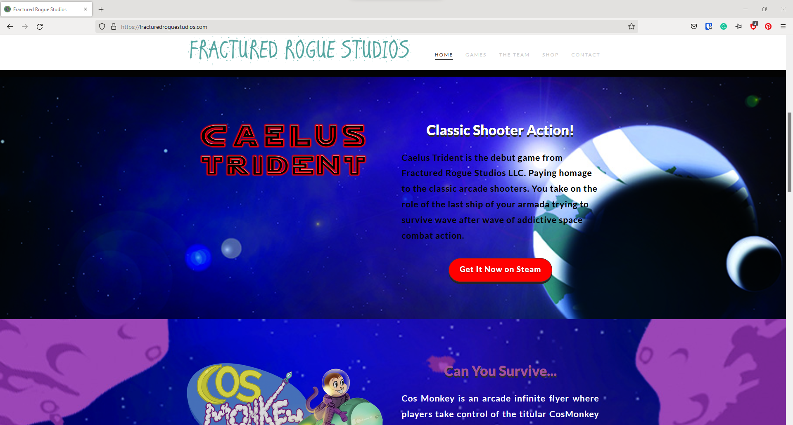
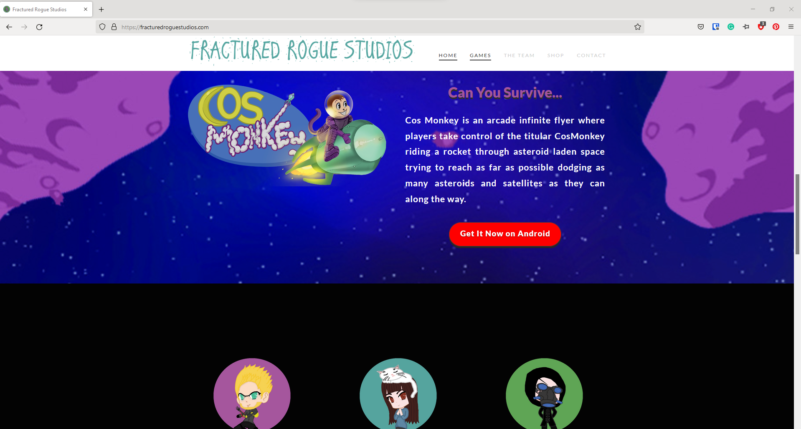

Fractured Rogue Website
Problem
The Contact Us section of the Fractured Rogue website was determined to be too generic. They wanted an image that felt more personal to the user.
Insight
The client’s style is more personal and friendly to the customer. They want to create feeling of community.
Approach
I did some initial research on UI for Contact Us sections. They tend to be focused on a corporate look, which isn’t the direction that Fractured Rogue
wanted. I created an image that conveyed the concept of email being sent, but also gave it wings in order to make it fun.
Solution
Using Photoshop, I used softer colors and more fanciful imagery. As a gaming company, fantasy is part of the fun. I still kept the image simple so it can
be easily understood.
Result/Outcome
The image was well-received by the team and is used by them on the Fractured Rogue Website.

